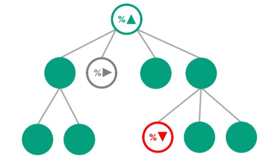

Problem description
Identifying the most important KPIs within a Business Unit (BU) and the broader company can be a complex task. This project leverages machine learning models to establish the significance of various KPIs and prioritize them accordingly. By gaining a deeper understanding of these KPIs, stakeholders can make informed decisions and allocate resources more effectively.

Through KPI tree analysis and machine learning models, we gained valuable insights into the significance of different KPIs, enabling us to prioritize them for better decision-making.
Key Steps and Results
Data Collection: Data related to various KPIs across the BU and company were collected, encompassing mostly operational and quality metrics. This comprehensive dataset served as the foundation for the analysis.
Exploratory Data Analysis: An in-depth analysis of the dataset revealed insights into the relationships between input metrics and the KPI. Data distributions, correlations, and outliers were examined to gain a comprehensive understanding of the data.
KPI Tree Analysis: A KPI tree was constructed, mapping the relationships between different KPIs. This hierarchical structure helped us visualize the dependencies and interactions among various metrics. By analyzing the tree, we gained insights into the KPIs that have the most significant impact on the overall performance of the BU and the company.
Model Building and Evaluation: A robust machine learning pipeline was constructed using SKLearn and PyCaret libraries. Different algorithms were tested, optimized through cross-validation and hyperparameter tuning. Model performance was evaluated using metrics/tools such as the confusion matrix, AUC, precision, recall, and F1-score.
Decision-Making and Resource Allocation: By identifying and prioritizing the most important KPIs, we gained a better understanding of the key drivers behind our BU and company success. Armed with this knowledge, stakeholders and decision-makers can now allocate resources more effectively, focus on improving the critical areas, and make data-driven decisions that align with our long-term goals.
Conclusion
 Machine learning techniques proved valuable in uncovering critical input metrics for a significant KPI, empowering businesses to prioritize and optimize their long-term goals. Through the use of SKLearn and PyCaret, an accurate and interpretable model was built, providing valuable insights into the driving factors behind the KPI.
Machine learning techniques proved valuable in uncovering critical input metrics for a significant KPI, empowering businesses to prioritize and optimize their long-term goals. Through the use of SKLearn and PyCaret, an accurate and interpretable model was built, providing valuable insights into the driving factors behind the KPI.
By leveraging the power of machine learning, organizations can make data-driven decisions and drive improvements in areas that truly matter. Projects like this offer a promising avenue for gaining a competitive edge in today's evolving business landscape.
In summary, this project demonstrates the effectiveness of machine learning in identifying crucial input metrics for company KPIs. By employing SKLearn and PyCaret, meaningful insights were obtained, enabling stakeholders to allocate resources and devise strategies that contribute to overall success.